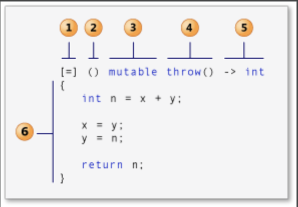

一、lambda是什么 在 C++ 11 及更高版本中，Lambda 表达式（通常称为 Lambda）用来定义匿名函数对象，用来作为参数传递给算法或者作为匿名函数进行调用，使得代码更加灵活简洁。
二、lambda语法 lambda语法组成：
[capture-list] (parameters) mutable -> return-type { statement }

2.1 capture-list capture-list 可以把上下文变量以值或引用的方式捕获，在statement 中直接使用，若capture-list 为空，则不捕获任何变量。
[var] : 表示值传递方式捕捉变量
[=] : 表示值传递方式捕获所有父作用域中的变量，包括this
[&var] : 表示引用传递捕捉变量var
[&] : 表示引用传递捕捉所有父作用域中的变量，包括this
[this] : 表示值传递方式捕捉当前的this指针
说明:mutable 允许修改副本，而不能修改原始变量）
1 2 3 4 5 6 7 8 9 10 11 12 13 14 15 16 17 18 19 20 21 22 23 24 25 26 27 28 29 30 31 32 33 34 35 36 37 38 39 40 41 42 43 #include <iostream> int x = 1 ;auto fun = [x]{ std::cout << x << std::endl; }; int main () int a = 3 ; int b = 5 ; auto func1 = [a] { std::cout << a << std::endl; }; func1 (); auto func2 = [=] { std::cout << a << " " << b << std::endl; }; func2 (); auto func3 = [&a] { std::cout << a << std::endl; }; func3 (); auto func4 = [&] { std::cout << a << " " << b << std::endl; }; func4 (); auto func5 = [&,b] { std::cout << a << " " << b << std::endl; }; func5 (); auto func6 = [=,b] { std::cout << a << " " << b << std::endl; }; func6 (); auto func6 = [&,&b] { std::cout << a << " " << b << std::endl; }; auto func7 = [=,b] { std::cout << a << " " << b << std::endl; }; auto func8 = [=] { a = 10 ; std::cout << a << " " << b << std::endl; }; auto func8 = [=] mutable { a = 10 ; std::cout << a << " " << b << std::endl; }; }
2.2 parameters 参数列表是可选的，它在大多数方面类似于函数的参数列表。
1 2 3 4 5 6 auto fun1 = [] (int first, int second){ return first + second; }; auto fun2 = []{ std::cout << "Hello Worl" << std::endl;};
在 C++14 中，如果参数类型是泛型，则可以使用 autoauto
1 2 3 4 5 6 7 8 int a = 3 ;double b = 5.1 ;auto func = [](auto x,auto y){ auto ret = x + y; std::cout << ret << std::endl; }; func1 (a,b);
2.3 mutable mutable 为可选
通常Lambda 的函数调用运算符是 const-by-value，但对 mutablemutable值捕获的变量 。
2.4 return-type return-type 为可选的情况
statement 仅一个返回语句，编译器将从返回表达式的类型推导返回类型statement 没有返回值，编译器会将返回类型推导为 void
1 2 3 4 5 auto x1 = [](int i){ return i; }; auto x2 = []{ return { 1 , 2 }; }; auto x3 = []->vector<int >{ return { 1 , 2 }; };
2.5 statement statement 是一个复合语句。 它可以包含普通函数或成员函数体中允许的任何内容。 普通函数和 lambda 表达式的statement 均可访问以下变量类型：
从封闭范围捕获变量，如前所述
参数
本地声明变量
类数据成员（在类内部声明并且捕获 this
具有静态存储持续时间的任何变量（例如，全局变量）
1 2 3 4 5 6 7 8 9 10 11 12 13 14 15 16 17 18 19 20 #include <iostream> int i = 1 ;static int j = 2 ;int main () auto f = []{ i = 3 ; j = 4 ; std::cout << i << std::endl; std::cout << j << std::endl; }; f (); std::cout << i << std::endl; std::cout << j << std::endl; return 0 ; }
三、lambda与函数对象 在lambda 出现之前，编写代码有时候需要用到函数指针或函数对象。它们各有利弊，例如：函数指针具有最低的语法开销，但不保持范围内的状态，函数对象可保持状态，但需要类定义的语法开销。
lambda 结合了函数指针和函数对象的优点并避免其缺点。 与函数对象一样，lambda 是灵活的并且可以保持状态，但与函数对象不同之处在于其简洁的语法不需要显式类定义。 使用 lambda，可以编写出比等效的函数对象代码更简洁、更不容易出错的代码。
四、lambda表达式示例 4.1 编译器对lambda处理 C++ 编译器将在声明而非调用 lambda 表达式时，将表达式绑定到捕获的变量。 以下示例显示一个通过值捕获局部变量 i 并通过引用捕获局部变量 j 的 lambda 表达式。 由于 lambda 表达式通过值捕获 i，因此在程序后面部分中重新指派 i 不影响该表达式的结果。 但是，由于 lambda 表达式通过引用捕获 j，因此重新指派 j 会影响该表达式的结果。
1 2 3 4 5 6 7 8 9 10 11 12 13 14 15 16 #include <iostream> int main () using namespace std; int i = 3 ; int j = 5 ; auto f = [i, &j] { return i + j; }; i = 22 ; j = 44 ; cout << f () << endl; }
4.2 lambda调用 可以立即调用 lambda 表达式，也可以将lambda作为参数传递给函数。
1 2 3 4 5 6 7 8 9 10 11 12 13 14 15 16 17 18 19 20 21 22 23 24 25 26 #include <iostream> #include <vector> #include <algorithm> using namespace std;int main () int n = [] (int x, int y) { return x + y; }(5 , 4 ); cout << n << endl; vector<int > numbers{3 ,5 ,8 ,13 ,14 ,15 }; const vector<int >::const_iterator result = find_if (numbers.begin (), numbers.end (), [](int n) { return (n % 2 ) == 0 ; }); if (result != numbers.end ()) { cout << "The first even number in the list is " << *result << "." << endl; } else { cout << "The list contains no even numbers." << endl; } return 0 ; }
4.3 嵌套lambda 可以将 lambda 表达式嵌套在另一个中。
1 2 3 4 5 6 7 8 9 10 11 12 13 #include <iostream> using namespace std;int main () int timestwoplusthree = [](int x) { return [](int y) { return y * 2 ; }(x) + 3 ; }(5 ); cout << timestwoplusthree << endl; }
五、lambda底层实现 lambda表达式本质是编译器将其翻译成一个类，并重载 operator()来实现。
lambda的各个部分和类的各个部分对应关系:
capture-list <-> 类中private成员
parameters <-> 类中operator()成员函数的形参列表
mutable <-> 类成员函数 operator() 的const属性 (只有在捕获列表捕获的参数不含有引用捕获的情况下才会生效)
return-type <-> 类成员函数 operator() 的返回类型
statement <-> 类成员函数 operator() 的函数体
说明：编译器生成的lambda类型一般为lambda_ + uuid ，确保类名是唯一的
1 2 3 4 5 6 7 8 9 10 11 12 13 14 15 16 17 18 19 20 21 22 23 24 25 26 27 28 29 30 31 32 33 34 35 36 37 38 39 40 41 42 43 44 45 46 #include <algorithm> #include <string> #include <vector> using Date = std::string;struct Person { std::string name; Date birthday; }; std::vector<Person> peoples{{"Marie Curie" , "1867-11-7" }, {"Albert Einstein" , "1879-3-14" }, {"Johann Carl Friedrich Gauß" , "1777-4-30" }}; void sortPeopleNoLambda () struct ByName { bool operator () (const Person& a, const Person& b) return a.name < b.name; } }; std::sort (peoples.begin (), peoples.end (), ByName{}); } void sortPeopleWithLambda () std::sort (peoples.begin (), peoples.end (), [](const Person& a, const Person& b){ return a.name < b.name; }); } [](const Person& a, const Person& b){ return a.name < b.name; } struct __lambda_1 { inline bool operator (const Person& a, const Person& b) const a.name < b.name; } __lambda_1() = delete ; __lambda_1& operator =(const __lambda_1&) = delete ; }; __lambda_1();
5.1 变量捕获 1 2 3 4 5 6 7 8 9 10 11 12 13 14 15 16 17 18 19 20 21 22 23 24 25 26 27 28 29 30 31 32 33 34 35 36 37 38 39 40 41 42 43 44 45 46 47 48 49 50 51 52 53 54 55 56 57 58 59 60 61 62 63 64 65 66 67 68 69 70 71 72 73 74 75 76 77 78 79 80 81 int i = 0 ;int j = 0 ;auto f = [=] { return i == j; } struct __lambda_2 { __lambda_2(int i, int j): __i(i), __j(j) {} inline bool operator () () const return __i == __j; } private : int __i; int __j; }; __lambda2 f (i,j) ;bool ret = f ();int i = 0 ;int j = 0 ;auto f = [&] { return i == j; } lambda 表达式会转为： struct __lambda_2 { __lambda_2(int & i, int & j): __i(i), __j(j) {} inline bool operator () () return __i == __j; } private : int & __i; int & __j; }; __lambda2 f (i,j) ;bool ret = f ();struct X { void printAsync () callAsync ([this ] { std::print ("X::i={}" , i); }); } private : int i{42 }; }; 编译器把 lambda 转为： struct X { void printAsync () struct __lambda_3 { __lambda_3(X* _this): __this(_this) {} void operator () () const std::print ("X::i={}" , __this->i); } private : X* __this; }; } callAsync (__lambda_3(this )); private : int i{42 }; };